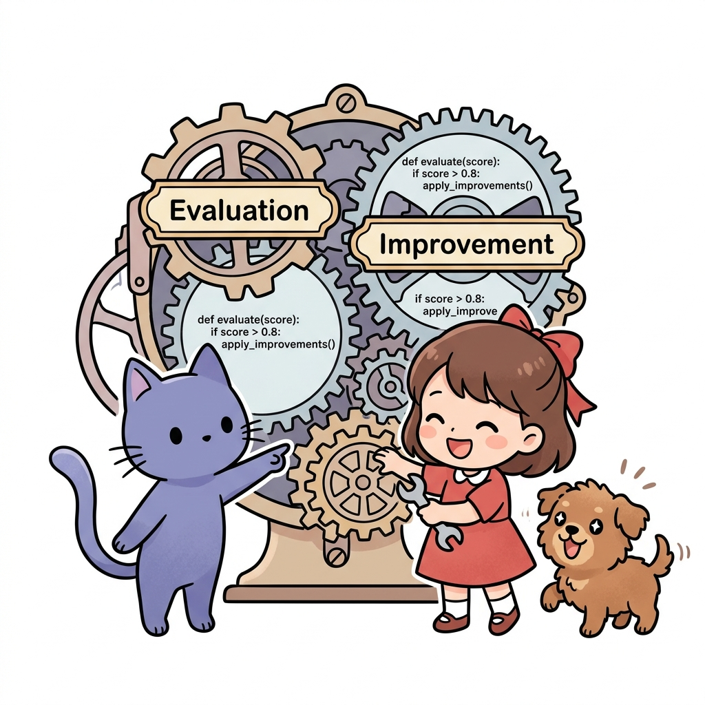
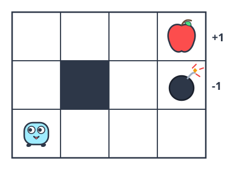
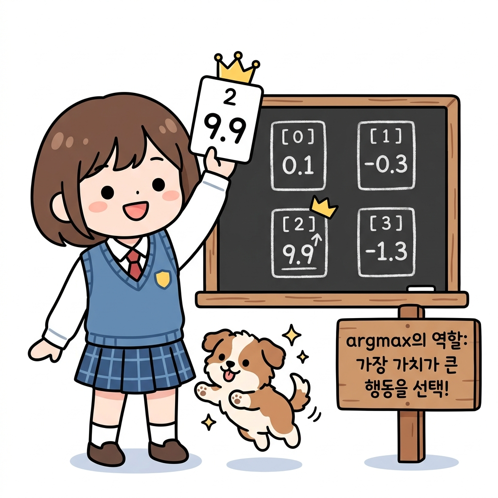
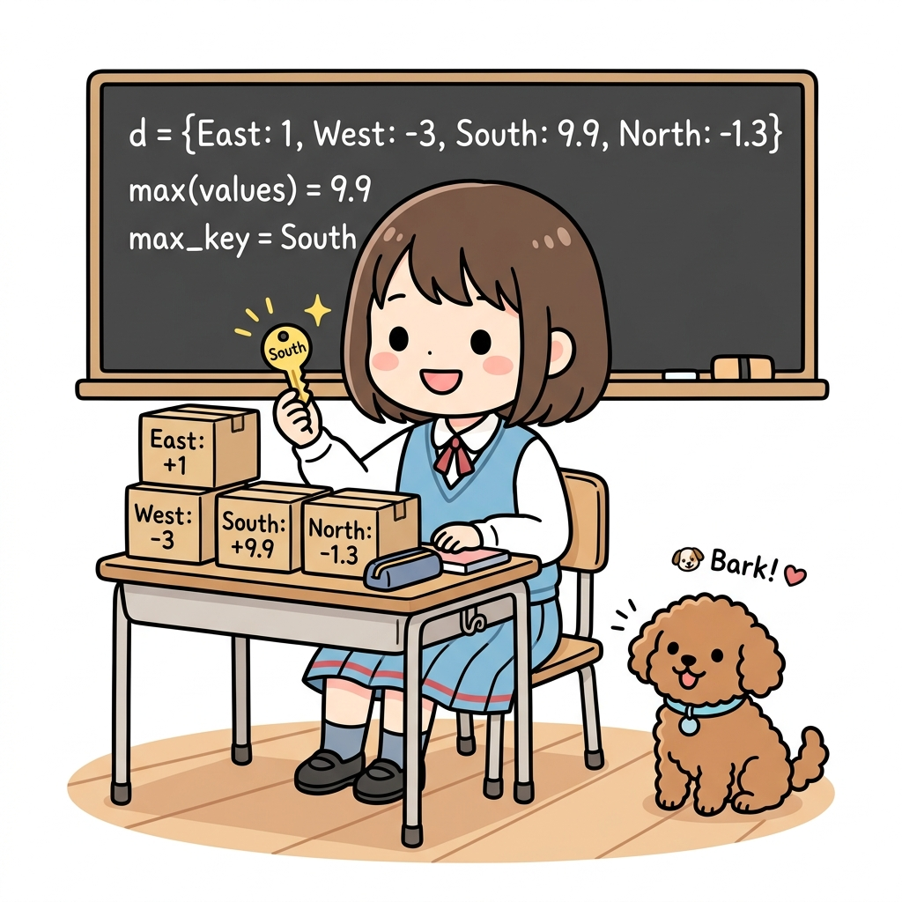
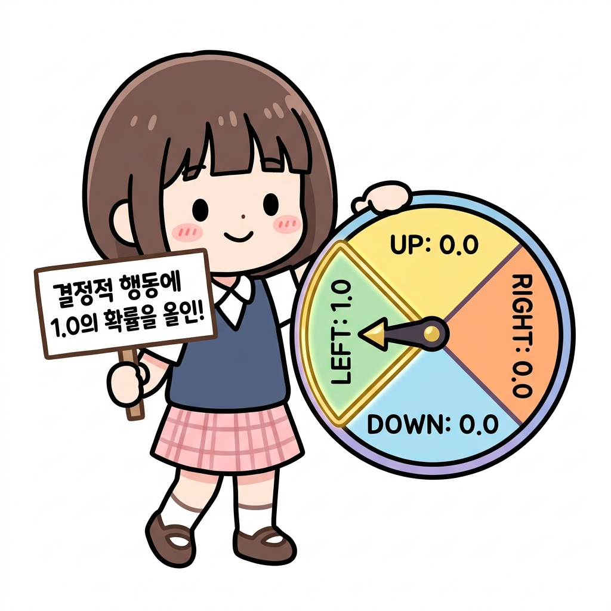
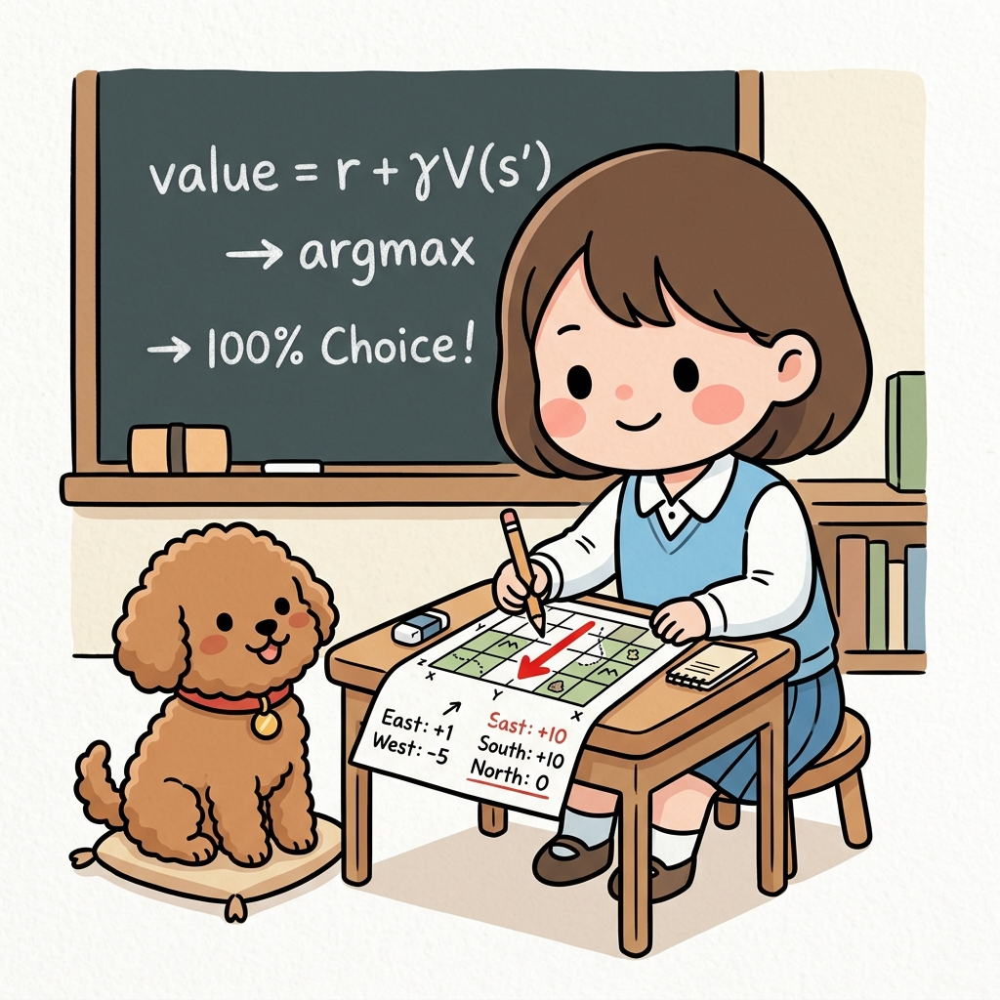
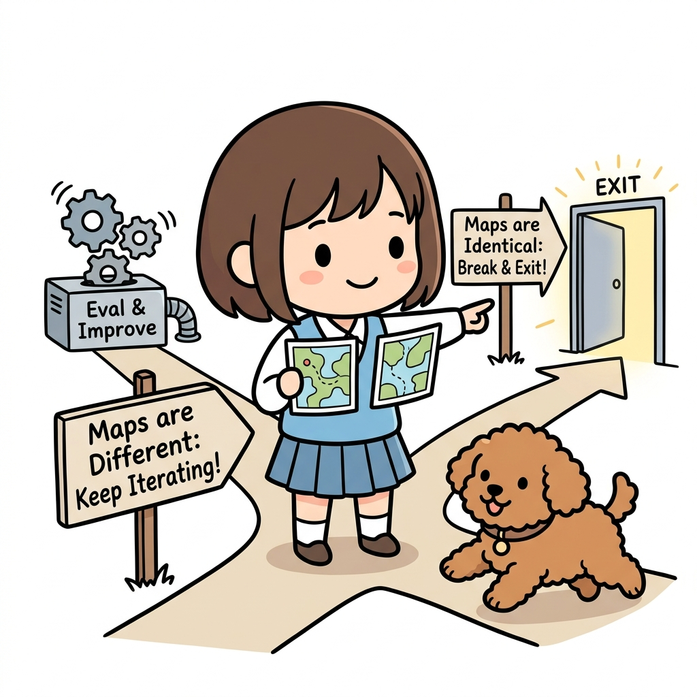
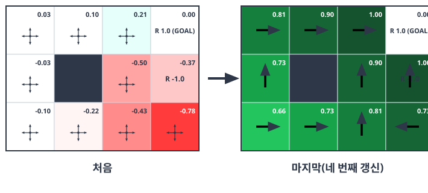

07.5 정책 반복법 구현
정책 반복법을 이용하여 최적 정책을 찾아봅시다.
그림 07-14-1 정책 평가와 개선 기어를 파이썬 렌치로 유기적으로 연결하여 조립하는 지니와 도로시

정책 반복법의 완성은 우리가 앞서 만든 ‘정책 평가(가치 함수 계산)’ 기어와 앞으로 만들 ‘정책 개선(탐욕화 업데이트)’ 기어를 파이썬 코드로 톱니처럼 정확히 맞물려 돌리는 일입니다. 지니의 설명을 따라 두 거대한 연산 기어가 조립되어 스스로 움직이는 마법 같은 루프를 파이썬 코드로 설계하러 떠나볼까요?
다시 한번 [그림 07-15]의 ‘3 × 4 그리드 월드’를 풀어보겠습니다.
그림 07-15 3 × 4 그리드 월드

정책을 평가하는 코드는 앞에서 이미 구현했습니다. 남은 일은 ‘정책 개선’뿐입니다.
07.5.1 정책 개선
정책을 개선하기 위해서는 현재의 가치 함수에 대한 탐욕 정책을 구합니다.
수식으로 다음과 같이 표현할 수 있습니다. \(\mu'(s) = \operatorname{argmax}_a \sum_{s'} p(s' \mid s, a) \{ r(s, a, s') + \gamma v_{\mu}(s') \} \tag{식 07.7}\)
결정적
또한 이번 문제에서 상태는 고유하게 전이됩니다. 즉, 결정적입니다.
따라서 탐욕화를 다음과 같이 단순화할 수 있습니다.
s’ = f(s, a) 일 때 \(\mu'(s) = \operatorname{argmax}_a \{ r(s, a, s') + \gamma v_{\mu}(s') \} \tag{식 07.8}\)
[식 07.8]과 같이 다음 상태 s’는 하나만 존재할 수 있습니다.
탐욕정책
이제 [식 07.8]을 바탕으로 탐욕 정책을 구하는 함수를 구현하면 됩니다.
사전 준비로 argmax() 함수부터 구현하겠습니다. argmax()는 딕셔너리를 매개변수로 받아 값이 가장 큰 원소의 키를 반환합니다.
사용법부터 보겠습니다.
action_values = {0: 0.1, 1: -0.3, 2: 9.9, 3: -1.3} # 9.9가 최댓값(키는 2)
max_action = argmax(action_values)
print(max_action)
출력 결과
2
구현하기는 어렵지 않습니다.

argmax()
보다시피 argmax() 는 매우 간단한 코드입니다.
def argmax(d):
max_value = max(d.values())
max_key = 0
for key, value in d.items():
if value == max_value:
max_key = key
return max_key
매개변수로 주어진 딕셔너리 d에서 가장 큰 값을 찾아 그 키를 반환합니다. 코드를 간소화하기 위해 최댓값이 여러 개라면 마지막 키를 반환하도록 했습니다.
따라서 언제나 하나의 키만 반환합니다.
💡 그림으로 보는 argmax() 작동 로직 (딕셔너리 키 찾기)
- 딕셔너리
d(상자들): 동, 서, 남, 북 4방향의 점수가 적힌 상자(딕셔너리)가 들어옵니다. (예:d = {East: 1, West: -3, South: 9.9, North: -1.3})- 최댓값 찾기 (
max_value = max(d.values())): 4개의 상자의 점수 중에서 가장 큰 값인9.9를 찾습니다.- 최댓값의 키 찾기 (
for key, value in d.items()): 상자들을 하나씩 열어보며 점수가9.9인 상자를 찾습니다. 그 결과인South방향(키)을 획득하여 반환합니다. (만약 공동 1등이 존재한다면, 코드는 마지막에 대조된 키를 최종 갱신하여 반환하게 됩니다.)그림 07-17 4개의 점수 상자 중 가장 큰 값(9.9)을 가진 남쪽(South) 열쇠를 꺼내는 도로시와 토토

탐욕화 함수
이제 argmax() 함수를 사용하여 가치 함수를 탐욕화하는 함수를 구현하겠습니다.
def greedy_policy(V, env, gamma):
pi = {}
for state in env.states():
action_values = {}
for action in env.actions():
next_state = env.next_state(state, action)
r = env.reward(state, action, next_state)
value = r + gamma * V[next_state] # ❶
action_values[action] = value
max_action = argmax(action_values) # ❷
action_probs = {0: 0, 1: 0, 2: 0, 3: 0}
action_probs[max_action] = 1.0
pi[state] = action_probs # ❸
return pi
greedy_policy(V, env, gamma) 함수는 가치 함수 V, 환경 env, 할인율 gamma를 매개변수로 받고, 건네진 가치 함수 V를 사용하여 탐욕화한 정책을 반환합니다.
❶에서는 각 행동을 대상으로 [식 07.8]의 r(s, a, s’) + γvπ(s’) 부분을 계산합니다. 그리고 ❷에서 argmax() 함수를 호출하여 가치 함수 값이 가장 큰 행동(max_action)을 찾은 다음, max_action이 선택될 확률이 1.0이 되도록(결정적이 되도록) 확률 분포를 생성합니다. 그리고 이를 상태 state에서 취할 수 있는 행동의 확률 분포로 설정합니다. 이상이 탐욕 정책을 구현한 함수입니다.

💡 그림으로 보는 greedy_policy() 작동 로직
- ❶ 가치 계산 (
value = r + gamma * V[next_state]): 각 상태(격자 칸)에서 가능한 행동(동서남북)을 하나씩 취해봅니다. 각 방향으로 한 걸음 갔을 때 얻는 즉각 보상 사과(r)와 이동한 땅의 미래 가치 표 점수(V[next_state])에 할인율(γ)을 곱한 값을 더해, 그 방향의 총 가치를 구합니다.- ❷ 가장 높은 가치 탐색 (
max_action = argmax(action_values)): 동서남북 4방향의 점수를 대조하여 가장 기대 가치가 높은 방향(예: 남쪽의 +10)을 찾아냅니다.- ❸ 정책에 100% 선택 기록 (
action_probs[max_action] = 1.0): 가장 큰 기대 점수를 주는 그 한 방향의 선택 확률을 100%(1.0)로 설정하고 나머지는 0으로 만들어, 도로시의 새 보물 지도(pi)의 해당 칸에 꾹 기록해 둡니다. 이 과정을 격자 세상의 모든 칸을 돌며 수행합니다.그림 07-16 각 상태에서 가장 좋은 방향을 계산하여 지도(π)에 화살표로 꾹 그리는 도로시

CAUTION_ 탐욕 정책은 결정적인 정책을 만들어줍니다. 따라서 ❸에서
pi[state] = max_action처럼 행동을 하나만 지정할 수도 있습니다. 하지만 정책 평가를 수행하는policy_eval(pi, ...)함수가 확률적 정책을 받도록 구현되어 있으므로 이번 코드도 확률적으로 구현했습니다.
07.5.2 평가와 개선 반복
이제 평가와 개선을 반복하는 ‘정책 반복법’을 구현할 준비가 되었습니다.
함수작성
이번 절에서는 정책 반복법을 policy_iter(env, gamma, threshold=0.001, is_render=False)라는 함수로 구현합니다.
각 매개변수의 타입과 의미는 다음과 같습니다.
• env (Environment): 환경
• gamma (float): 할인율
• threshold (float): 정책을 평가할 때 갱신을 중지하기 위한 임곗값
• is_render (bool): 정책 평가 및 개선 과정을 렌더링할지 여부
다음은 코드입니다.
def policy_iter(env, gamma, threshold=0.001, is_render=False):
pi = defaultdict(lambda: {0: 0.25, 1: 0.25, 2: 0.25, 3: 0.25})
V = defaultdict(lambda: 0)
while True:
V = policy_eval(pi, V, env, gamma, threshold) # ❶ 평가
new_pi = greedy_policy(V, env, gamma) # ❷ 개선
if is_render:
env.render_v(V, pi)
if new_pi == pi: # ❸ 갱신 여부 확인
break
pi = new_pi
return pi
먼저 정책 pi와 가치 함수 V를 초기화합니다. defaultdict를 사용하여 초깃값을 부여했습니다. 정책 pi의 초깃값은 각 행동이 균등하게 선택되도록 설정했습니다.
이 코드에서 핵심은 ❶과 ❷입니다. ❶에서는 현재의 정책을 평가하여 가치 함수 V를 얻습니다. 그다음 ❷에서 V를 바탕으로 탐욕화된 정책 new_pi를 얻습니다.
❸에서는 정책이 갱신되었는지 확인합니다.
갱신되지 않았다면 벨만 최적 방정식을 만족하는 것이고, 이때의 pi (와 new_pi)가 최적 정책이라는 뜻이 됩니다. 그렇다면 while 순환문을 빠져나와 pi를 반환합니다.
💡 그림으로 보는 policy_iter() 루프 탈출 조건 (Break)
- 지도가 다를 때 (
new_pi != pi): 아직 평가와 개선을 더 반복해야 하므로Eval & Improve루프 쳇바퀴(상태 가치 평가 ❶ ➔ 탐욕 정책 개선 ❷)로 다시 돌아갑니다.- 지도가 같아질 때 (
new_pi == pi): 더 이상 지도의 화살표가 바뀌지 않으므로, 정책이 최적으로 수렴했다고 판정하고 무한 루프를 탈출(break❸)하여 최적 지도를 최종 반환합니다.
그림 07-18 두 지도가 같은지 대조해보고 루프 탈출구(Exit)로 나가는 도로시와 토토

문제풀이
이제 실제로 policy_iter() 함수를 사용하여 문제를 풀어보겠습니다.
env = GridWorld()
gamma = 0.9
pi = policy_iter(env, gamma)
이 코드를 실행하면 정책 반복법의 각 단계별 결과를 시각화해줍니다.
결과는 [그림 07-16]과 같습니다.
그림 07-16 처음과 마지막 가치 함수 및 정책(각 칸에 가치 함수의 값과 정책 표시)

그림에서 보듯 처음에는 무작위 정책으로 시작했고 가치 함수 값은 마이너스(빨간색)가 대부분입니다. 하지만 네 번째 갱신 후에는 목표 지점을 제외한 모든 칸에서 플러스(녹색)로 바뀝니다.
또한 진행 방향(화살표)을 보면 모든 칸에서 폭탄을 피하고 사과를 얻는 방향으로 향하고 있습니다.
이것이 최적 정책입니다.
축하합니다!
정책 반복법을 사용하여 드디어 최적 정책을 찾아냈습니다.
‘3 × 4 그리드 월드’를 완전히 정복했다는 뜻입니다.
CAUTION_ ‘3 × 4 그리드 월드’ 문제에서 결정적 최적 정책은 두 가지가 있습니다.
하나는 물론 [그림 07-16]에서 보여준 정책입니다. 그리고 다른 하나는 [그림 07-16]의 정책과 같지만 시작 지점(왼쪽 맨 아래 칸)에서 ‘위’로 이동하는 정책입니다.
시작 지점에서는 ‘오른쪽’과 ‘위’ 중 어느 쪽을 선택해도 최단 시간에 골인할 수 있습니다.